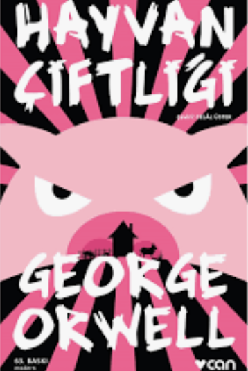
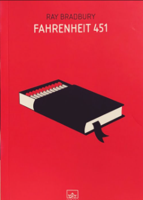
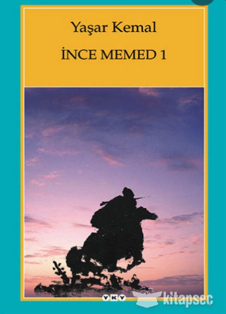

Merhaba,Ben Ziya Turan Ankara'da yaşıyorum. Boş vakitlerimde patika.dev sayfasında takılıyorum.Eğitimler kaliteli merakı olan herkes katılsın
Hayvan Çiftliği George Orwell'in modern klasikler arasına girmiş ikinci ünlü romanı ve çarpıcı bir politik taşlamadır.
Ray Bradbury'nin karanlık bir geleceği konu aldığı Fahrenheit 451 romanı, bilim kurgu ögelerini baskı rejimi ve robotlaşmış bir toplumla harmanlıyor.
Otuz iki yıllık bir zaman diliminde yazılan İnce Memed dörtlüsü düzene başkaldıran Memed'in ve insan ilişkileri, doğası ve renkleriyle Çukurova'nın ...
